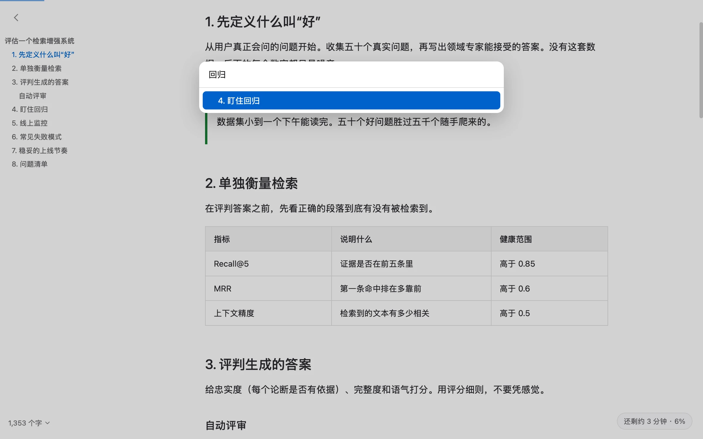
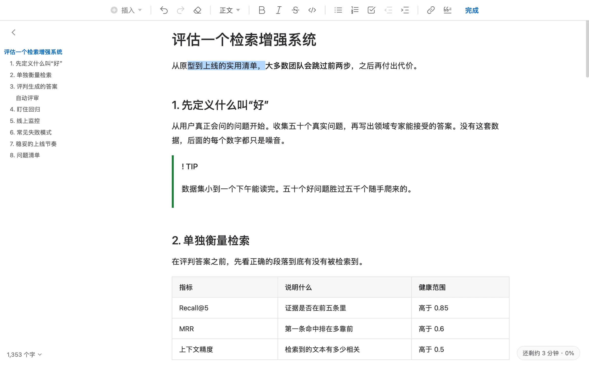

为长回答而做
克制的排版，加上只在文档足够长时才出现的几个小帮手。
- 进度条与“还剩 N 分钟”：只出现在长文档里
- 点边上的小箭头，收起任意章节
⌘J输入几个字就跳到某个标题- 很长的代码块和表格只显示开头，一点就展开
- 表格、公式、Mermaid 图、脚注和提示块都能正确显示
- AI 工具改了文件，页面自动刷新
同一份回答的前后对比。左边是你收到的文件，右边是双击后 mdPreview 显示的样子。
收到的 .md 文件
# 评估一个检索增强系统 从原型到上线的实用清单，**大多数团队会跳过前两步**。 ## 1. 先定义什么叫“好” > [!TIP] > 数据集小到一个下午能读完。 | 指标 | 健康范围 | |---|---| | Recall@5 | 高于 0.85 | | MRR | 高于 0.6 | - 收集五十个真实问题 - 写出专家能接受的答案
在 mdPreview 里
约半秒启动。双击文件，已经排好版。后台不跑任何东西。
一条细进度线、“还剩 N 分钟”、章节折叠和跳转标题，让五千字的回答不再望不到头。
点哪里，格式工具条就在顶部出现：加粗、标题、列表、链接、表格，再也看不到 **。
克制的排版，加上只在文档足够长时才出现的几个小帮手。
⌘J 输入几个字就跳到某个标题
文档默认是阅读状态。光标落在哪里，顶部就滑出一条细工具条；按 Esc 就收起。
⇧⌘V 粘贴成干净的文本⌘E 一键切换
给别人能直接打开的东西，而不是一个 .md 文件。
真分页、页码、书签，中文可搜索。
原生标题样式、表格、图片和脚注。
单个自包含的网页，带目录与深色模式，哪里都能打开。
⇧⌘C 复制后粘到邮件、备忘录、Word 或聊天软件。
一张长图，或不带 ## 的真正纯文本。
mdpreview export notes.md --to pdf
Mac 免费使用，哪种方便用哪种。
打开磁盘镜像，把 mdPreview 拖进“应用程序”。
下载 Mac 版先校验签名与校验和，安装后 macOS 完全不会弹出提示。
curl -fsSL https://raw.githubusercontent.com/tahoeliu/mdPreview/main/scripts/get.sh | bash
习惯用 Homebrew？brew install --cask --no-quarantine tahoeliu/tap/mdpreview
为什么多这一步？因为 mdPreview 是免费软件，没有购买 Apple 付费证书。需要 macOS 13 或更高版本。
不需要。读、点一下用工具条编辑、导出就行；想看源码也随时能切。
是的，MIT 开源，无账号、无广告、无数据上报。给个 GitHub Star 会帮助更多人发现它。
不会。唯一的网络请求是可关闭的更新检查；远程图片在你允许前不会加载。
mdPreview 是免费软件，没有 Apple 付费证书，所以浏览器下载的版本需要你确认一次：系统设置 → 隐私与安全性 → 仍要打开。用上面的终端命令安装则完全不会提示。
不能，也不想。它是专注阅读、顺手编辑、擅长分享的小工具，不是写作工作室或 IDE。
应用已内置。如果没有生效，请在“系统设置 → 通用 → 登录项与扩展 → Quick Look”里启用 mdPreview Quick Look。